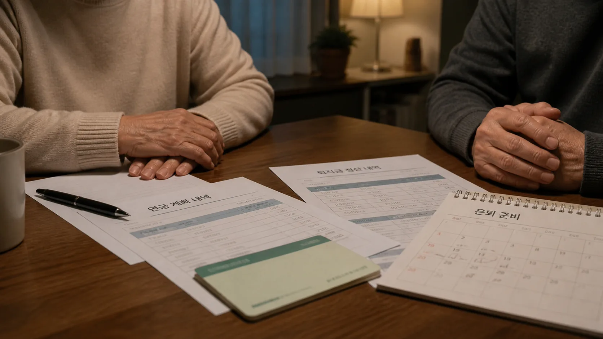

내가 일군 재산인데
MUST KNOW
모르면 손해 보는
이혼의 결정적 순간
재산분할집값이 올랐다면
집값이 올랐다면
분할 재산도 달라질까?
재산의 범위와 평가 기준일을 놓치면 계산부터 달라집니다.
핵심 포인트 보기 ↗상간·외도확실한 외도,
확실한 외도,
불법 증거가 되면?
입증은 필요하지만 방법까지 적법해야 합니다.
핵심 포인트 보기 ↗재판상 이혼상대가 거부해도
상대가 거부해도
이혼할 수 있을까?
합의가 어렵다면 재판상 이혼 사유와 입증이 쟁점입니다.
핵심 포인트 보기 ↗
퇴직금·연금아직 받지 않은 돈도
아직 받지 않은 돈도
나눌 수 있을까?
장래 퇴직급여와 연금도 조건에 따라 검토 대상이 됩니다.
핵심 포인트 보기 ↗양육권법원이 보는
법원이 보는
결정적 기준 세 가지
현재 양육환경, 주 양육자, 자녀의 복리를 중심으로 준비합니다.
핵심 포인트 보기 ↗이혼 절차협의, 조정, 재판
협의, 조정, 재판
무엇이 다를까?
다툼의 범위와 합의 가능성에 따라 시간과 전략이 달라집니다.
핵심 포인트 보기 ↗※ 위 내용은 일반적인 법률 정보이며, 실제 결과는 구체적인 사실관계와 증거에 따라 달라질 수 있습니다.